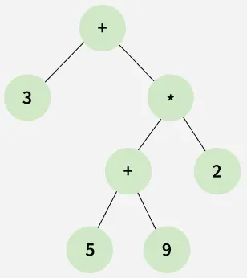

class: center, middle, title-slide # CSCI-UA 102 ## Data Structures <br> ## Arithmetic Expressions and Problem Solving .author[ Instructor: Romain Cosson <br><br><br> ] .license[ Copyright 2020 Joanna Klukowska. Unless noted otherwise all content is released under a <br> [Creative Commons Attribution-ShareAlike 4.0 International License](https://creativecommons.org/licenses/by-sa/4.0/).<br> Background image by Stewart Weiss<br>] --- layout:true template: default name: section class: inverse, middle, center --- layout:true template: default name: poll class: inverse, full-height, center, middle --- layout:true template: default name: breakout class: breakout, middle --- layout:true template:default name:slide class: slide .bottom-left[© J. Klukowska. (mod. R.C.) CC-BY-SA.] --- template: section ## Well-Parenthesized Expressions --- ## Bracket Matching Mathematical expressions use parenthesis to modify the order of operations. <br>For example, $3 \times ( 5 - 7 )$ is different than $(3 \times 5) -7$. Before evaluating an mathematical expression, we want to be able to verify that all the parenthesis in that expression are matched properly, since otherwise we cannot evaluate such an expression. <br>For example, $(3 \times (5 - 7)$ and $4 \times (( 2 - 1()$ do not make sense. #### Problem 1 Come up with an algorithm that validates parenthesis in mathematical expressions. The algorithm should take a string that contains the expression as input, and report either valid (true) or invalid (false). #### Problem 2 In programming languages parenthesis are used along with other types of brackets. Revise your algorithm so that it can validate expressions that contains `{`,`}`, `[`, `]` and `(`, `)`. --- ## Bracket Matching: Pseudocode #### Problem 1 - The problem can be solved by introducing a simple counter (`ìnt`). - To avoid challenges that arise with parsing the expression, a pseudocode is given here. #### Solution to Problem 1 ``` FUNCTION ValidParentheses(expression): count ← 0 FOR each character c IN expression: IF c == '(': count ← count + 1 ELSE IF c == ')': count ← count - 1 IF openCount < 0: RETURN false // too many closing parens early IF openCount == 0: RETURN true ELSE: RETURN false ``` --- ## Bracket Matching: Pseudocode #### Problem 2 - The problem can be solved by introducing a stack of characters. - Test the method on a few examples to see how it works. #### Solution to Problem 2 ``` FUNCTION ValidBrackets(expression): stack ← empty stack FOR each character c IN expressionString: IF c is one of '(' or '[' or '{': PUSH c onto stack ELSE IF c is one of ')' or ']' or '}': IF stack is empty: RETURN false IF stack.pop() does not close c: // We assume access to this test RETURN false IF stack is empty: RETURN true ELSE: RETURN false ``` --- ## Bracket Matching: Why does it work? - How would you prove that the following algorithm is correct? -- - Even before proving the algorithm, we can ask: what does it mean for an expression to be valid? -- - __Notation__: if `String exp1` and `String exp2` are two expression, then `String exp1 exp2` is the __concatenation__ of `exp1` and `exp2`. - e.g. `exp1 = (5+3)` and `exp2 = {2+1}`, then `exp1 exp2 = (5+3){2+1}`. -- .box[ __Definition:__ an expression `exp` is well-parenthesized if either: 1. `exp` is a character that is not a parenthesis, or 2. `exp` is of the form `A exp B` where `A` and `B` are matching parentheses (B closes A) 3. `exp` is a concatenation of two well-parenthesized expressions `exp = exp1 exp2` ] -- - Observe that this definition is recursive. -- - Based on this definition, prove that: - `7x(5+3-{2+1})` is well-parenthesized - `2+[{5+3}]-5` is well-parenthesized --- ## Bracket Matching: Why does it work? - Here is another algorithm for validating parentheses, that clearly matches the definition of a well-parenthesized expression (using induction): ``` FUNCTION ValidParentheses(expression): WHILE RemoveMostNestedPair(expression): // keep removing the most nested pair of parentheses // until there are no more pairs left // (expression is modified in-place) IF expression does not contain any parentheses: RETURN TRUE ELSE: RETURN FALSE FUNCTION RemoveMostNestedPair(expression): // This function removes the most nested pair of matching // parentheses from the expression, if it exists. // For example, if the input is "{7x(5+3)}", the output is "{7x}". // The function returns FALSE if there is no such pair, and TRUE otherwise. // This function can be implemented in O(N) by scanning the expression. ``` -- - The correctness of this algorithm is easier to prove (try on a few examples). -- - BUT it runs in O(N^2) time, while the stack-based algorithm runs in O(N) time. -- - You can formally prove that the stack-based algorithm is correct by showing that it simulates the above algorithm. --- template: section ## Arithmetic Expressions --- ## Evaluating Artihmetic Expressions Now let us turn to the task of evaluating mathematical expressions. For example, we want to be able to evaluate the expression $$ ((15/(7-(1+1)))\times3)-(2+(1+1)) $$ -- - What algorithm do you intuitively use when you evaluate this expression by hand? -- - find and evaluate all subexpressions that are the most nested (surrounded by parenthesis); - for each operator figure out what its operands are; this involves determining precedence of operators (i.e. knowing the order of operations) - Do you think it would implement in O(N) or O(N^2) time? -- It turns out that it is much simpler to write code for evaluation of arithmetic expressions when they are written in a format that lets us ignore parenthesis and that does not depend on operator precedence. These two ways are __prefix__ and __postfix notations__. -- - In __prefix__ notation the operator comes __before__ its operands. - In __postfix__ notation the operator comes __after__ its operand. -- |infix|prefix|postfix| |:---:|:---:|:---:| | `2 + 5` | `+ 2 5` | `2 5 +` | |`(2 + 4) × 5` | `× + 2 4 5` | `2 4 + 5 ×` | |`2 + 4 × 5` | `+ 2 × 4 5` | `2 4 5 × +` | --- ## Formalizing Arithmetic Expressions We start by defining expressions *independently* of how we write them. Arithmetic expressions are made of: - **Operands**: numbers / constants / variables (e.g., `15`, `3.2`) - **Operators**: symbols like `+`, `-`, `x`, `!` - **Arity** of an operator: the number of operands it takes - e.g., `arity(+) = 2`, ` arity(*) = 2`, ` arity(!) = 1` - Most operators are binary (arity 2), but some are unary (arity 1) or even ternary (arity 3, e.g., `?:` in C). -- .box[ **Definition:** A **prefix arithmetic expression** is: 1. any operand `a`, or 2. if `op` is an operator with `arity(op)=k` and `e1,...,ek` are prefix arithmetic expressions, then `op e1 ... ek` is a prefix arithmetic expression. ] -- - Show that `x + 2 5 6` and that `! + 6 7` are valid prefix arithmetic expressions. -- - Observe that `op e1 ... ek` evaluates to `op(e1,e2,...,ek)`, where `op` is the operator. -- - Note: functions in a programming language are naturally written in prefix notation. For example, `f(x,y,z)` where `f` is a funtion of three parameters `x`, `y`, and `z`. --- ## Postfix Notation (a.k.a. Reverse Polish Notation) - In **postfix** notation, an operator appears **after** its operand(s). - `2 + 5` → `2 5 +` - `(2 + 4) * 5` → `2 4 + 5 *` - `2 + 4 * 5` → `2 4 5 * +` -- .box[ **Definition:** A **postfix arithmetic expression** is: 1. any operand `a`, or 2. if `op` is an operator with `arity(op)=k` and `e1,...,ek` are postfix arithmetic expressions, then `e1 ... ek op` is a postfix arithmetic expression. ] -- - Why it’s useful: - no parentheses needed - no operator-precedence rules needed - simple **stack** algorithm evaluates in linear time --- ## Evaluating Expression in Postfix Notation - Quick history: - “Polish notation” is named after logician Jan Łukasiewicz (1920s) - “Reverse Polish” / postfix became popular in early computing (stack-based evaluation) - used in some calculators (old Texas Instruments) and in compiler/interpreter internals #### Algorithm for evaluating postfix expressions .box[ __input:__ string containing a valid postfix expressions -> __output:__ value of the expression ``` create an empty stack scan the given postfix expression from left to right for each token in the input expression if the token is an operand then push it onto a stack else if the token is an operator then operand1 = pop stack operand2 = pop stack compute operand1 operator operand2 push result onto stack return top of stack as result ``` ] --- ## Converting from Infix to Postfix Notation - If the user gives us an expression in infix notation, we can __convert__ it to postfix notation before applying the previous algorithm. - It is a "pre-processing" step. - This conversion is __typical in compilers and interpreters__, where the source code is first parsed and converted to an intermediate representation (e.g., an expression tree) before being executed. - The Shunting Yard algorithm, invented by Edsger Dijkstra, is a well-known method for converting infix expressions to postfix notation. --- ## Shunting Yard Algorithm .box[ __input:__ string containing a valid infix expressions -> __output:__ same expression in postfix notation ``` create an empty stack for operators create an empty output queue FOR each token in the input expression: IF the token is an operand THEN push it onto the output queue ELSE IF the token is an opening parenthesis THEN push it onto the stack ELSE IF the token is a closing parenthesis THEN while the token at the top of the stack is not an opening parenthesis pop from stack and push onto output queue pop the opening parenthesis from the stack ELSE IF the token is an operator THEN while there is an operator at the top of the stack with greater precedence pop from stack and push onto output queue push the current operator onto the stack WHILE there are still operators on the stack: pop from stack and push onto output queue return the output queue as the result ``` ] --- template: section ## Expression trees --- ## What is an Expression Tree? An **Expression Tree** is a more general way to represent arithmetic expressions. - **Leaves**: These are the **operands** (numbers or variables). - **Internal Nodes**: These are the **operators** (like $+$, $-$, $\times$, $/$). <center>  <br><i>Expression tree for 3+((5+9)*2)</i> </center> - How to evaluate an expression tree? (Intuitively) - Observation: traversing the tree in different orders gives us the tree different notations (infix, prefix, postfix). --- template: section ## Other Problems To Think About --- ## Mystery Algorithms What do these algorithms do? .left-column2[ __Mystery 1:__ .box[ input: a positive integer n output: ??? algorithm: ``` create an empty stack while n > 0 : stack.push(n % 2) n = n / 2 while stack is not empty print stack.pop() ``` ]] .right-column2[ __Mystery 2:__ .box[ input: a positive integer n output: ??? algorithm: ``` create an empty queue queue.enqueue(0) queue.enqueue(1) for i in 0 .. n a = queue.dequeue() b = queue.dequeue() queue.enqueue(b) queue.enqueue(a + b) print a ``` ]] .below-column2[ Test them out with a few values of `n` to try to figure it out. ] --- ## Josephus Problem A simply counting out game that children play goes as follows: .smaller[ - a number is picked, call it K - a direction is picked: right or left - a child that starts is picked - all children are in a circle and as long as there are more than 1 children in the game they keep playing - the first child counts 1 - the next child (to the right or left based on the direction) counts 2 - the next child counts 3 - ... - the next child counts K and is removed from the game - the next child counts 1 - ... - the next child counts K and is removed from the game - ... - the one remaining child wins the game ] (The real Josephus problem is much more gruesome.) -- #### Problem Write a program that simulates this game. Given a number of children, the value of K and the direction, the program should determine the winner (or rather the position of the child that will win, assuming that child at position 1 starts the game). --- ## Integer list The programming language _Better And Portable Code_ (BAPC) is a language for working with lists of integers. The language has two built-in functions: - `R` = reverse the input and return the result - `D` = drop the first element and return the rest, or return `error` in case its input is an empty list .left-column2-large[ To get more advanced behavior, functions can be composed: `AB` is the function that first applies `A` to its input and then `B` to the resulting list. For example, `RDD` is a function that reverses a list and then drops the first two elements. Your task is to write an interpreter that processes instructions written in BAPC. Given a BAPC program and its input, return its output or "error" in case `D` is applied to an empty list. Lists are represented as the character `[` followed by a comma-separated list of integers followed by the character `]`. Notice that the input and output lists can be quite long. ] -- .right-column2-small[ __Example 1__ Program: `RDD`<br> Input: [1,2,3,4]<br> Output: [2,1] __Example 2__ Program: `DD`<br> Input: [102] <br> Output: error __Example 3__ Program: `RRD`<br> Input: [1,1,2,3,5,8]<br> Output: [1,2,3,5,8] ] --- ## Backspace Shortly before the programming contest started, Bjarki decided to update his computer. He didn't notice anything strange until he started coding in his favorite editor, Bim (Bjarki IMproved). Usually when he’s writing in an editor and presses the backspace key a single character is erased to the left. But after the update pressing that key outputs the character <. He’s tested all the editors on his machine, but they all seem to have the same problem. He doesn't have time to search the web for a solution, and instead decides to temporarily circumvent the issue with a simple program. .left-column2[ Help Bjarki write a program that takes as input the string that was written in the text editor, and outputs the string as Bjarki intended to write it. You can assume that Bjarki never intended to write the character <, and that Bjarki never pressed the backspace key in an empty line. ] -- .right-column2[ __Example 1__ Input: `a<bc<` <br> Output: `b` __Example 2__ Input: `foss<<rritun` <br> Output: `forritun` __Example 3__: Input: `a<a<a<aa<<` <br> Output: ] --- ## Synchronizing Lists For this problem, you have two lists of numbers, each list having length `n`. Each number in one list has a corresponding number in the other list. The correspondence is that if both lists were in sorted order and placed side by side, each pair of numbers would correspond. For example, in the lists (48,10,97) and (7,46,20), the corresponding numbers are 10 with 7, 48 with 20, and 97 with 46. This is because if you sort the first and the second lists, their orders would be: <br> `(10, 48, 97)`<br> `( 7, 20, 46)` You want to keep the lists synchronized (i.e., if the numbers get swapped in one list, their corresponding numbers should be swapped as well). You know that the second list has gotten out of order and you need to fix this. For example, given the two lists above, the second list should be reordered as (20,7,46) to be in order with the first list. -- __Example__ Input: ``` list 1: (10, 67, 68, 28) list 2: ( 6, 55, 73, 10) ``` Output: ``` ( 6, 55, 73, 10) ``` --- ## Room Painting Joe’s landlord has allowed him to paint his room any colour that he wants, even multiple colours. Joe has come up with a very colourful design. Now he needs to buy the paint. Being a struggling student, Joe does not want to waste any money, so he has calculated the exact amount that he needs of each colour down to the microlitre. To his surprise, however, the local paint shop is unwilling to sell him a can of exactly 3.141592 litres of red paint. The shop has a set of specific paint can sizes. The shop has almost unlimited amount of paint of each color, so each can can be filled with whatever colour Joe wishes and the shop has unlimited number of cans of each size. Joe has no choice but to buy a little bit more paint than he really needs. Still, he would like to minimize the amount of paint wasted. In addition, he does not want to buy more than one can of any given colour. --- ## Room Painting __Input__ The first line of input contains two integers - $1<=n<=100,000$ the number of paint can sizes offered by the paint shop, and - $1<=m<=100000$, the number of colours that Joe needs. Each of the next $n$ lines contains the size of a can offered by the paint shop, in microlitres. Each can contains no more than 1000 litres. Each of the next $m$ lines contains the number of microlitres that Joe needs of a given colour. It is guaranteed that for each colour, the paint shop sells a can large enough to satisfy Joe’s needs. __Output__ Output a single line, the total number of microlitres of paint wasted if Joe buys, for each colour, the smallest can that satisfies his needs. -- __Example__ .left-column2[ Input: ``` 3 2 5 7 9 6 8 ``` ] .right-column2[ Output: ``` 2 ``` ] --- If you wish to try to solve and submit some of the last problems, take a look at: - [Integer list](https://open.kattis.com/problems/integerlists) - [Backspace](https://open.kattis.com/problems/backspace) - [Synchronizing lists](https://open.kattis.com/problems/synchronizinglists) - [Room painting](https://open.kattis.com/problems/roompainting) </optgroup>